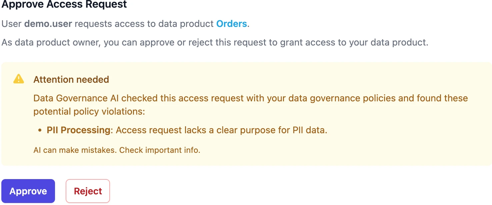
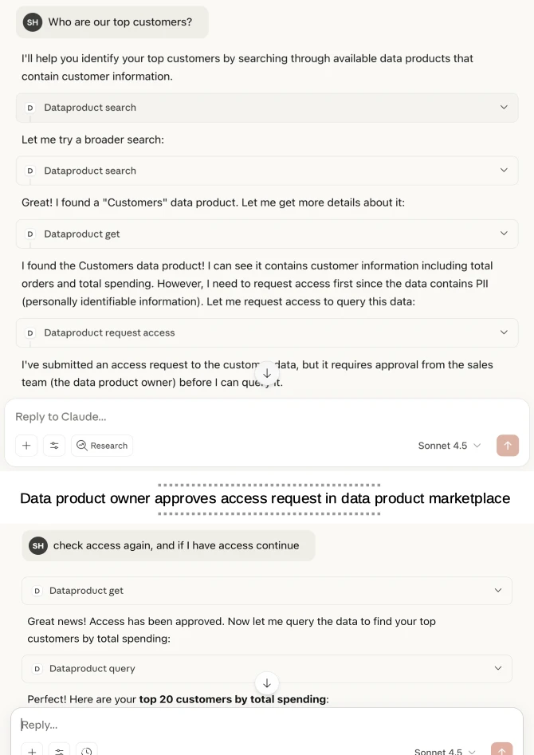
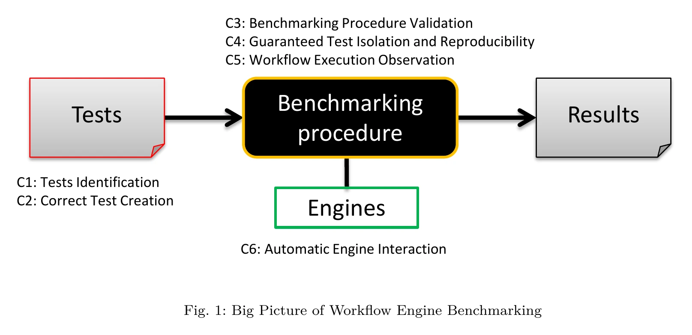
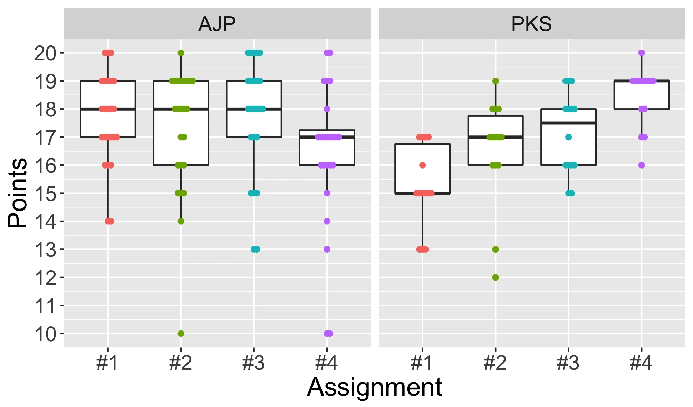
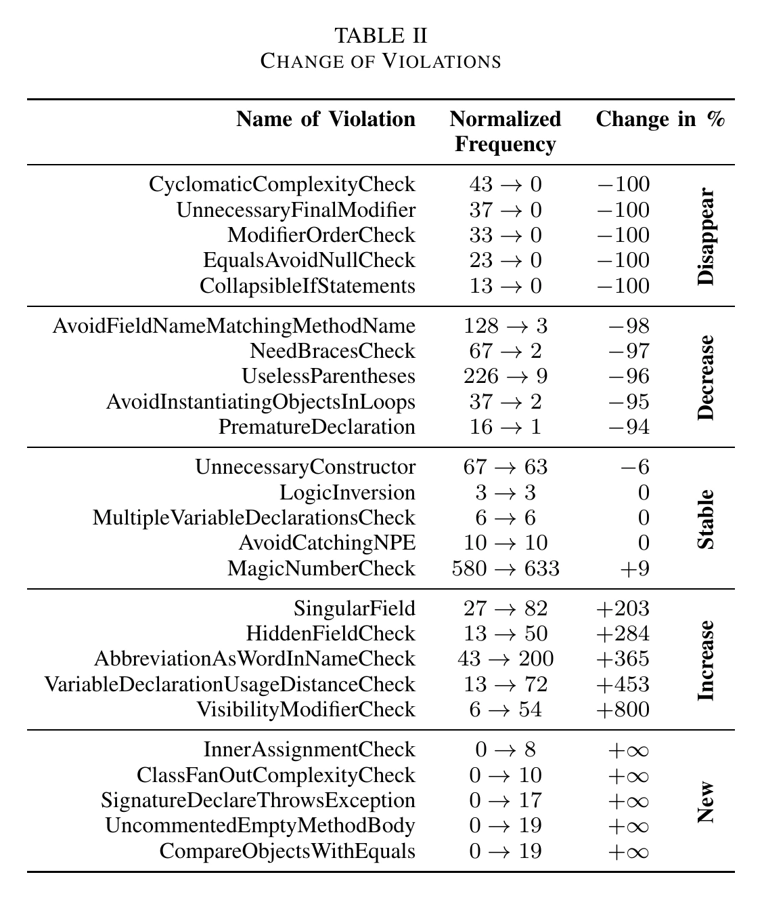

Research
Applied research on data governance, data products, and AI — published in peer-reviewed venues and turned into open source.
Google Scholar DBLP ORCID Entropy Data Research
Recent papers

Automating Data Governance with Generative AI
Conference AAAI/ACM Conference on AI, Ethics, and Society (AIES) 2025 · with Linus W. Dietz, Arif Wider
Uses LLMs to evaluate natural-language governance rules against metadata. Generated 3.6× more warnings than human experts while catching all compliance concerns; 80% of AI-generated warnings were correct on review.
Read Paper Cite it
Data Product MCP: Chat with your Enterprise Data
Preprint arXiv preprint, 2026 · with Marco Tonnarelli, Filippo Scaramuzza, Linus W. Dietz
An MCP server that bridges enterprise data products and LLM-based assistants while preserving governance and access controls.
Read Paper Cite itMost impactful papers during my time at University of Bamberg
Published 20+ peer-reviewed papers during PhD at Otto-Friedrich-Universität Bamberg (Dr. rer. nat., magna cum laude, 2017). Focus areas: BPMN/BPEL, workflow engine benchmarking, service composition.
GitOps: The Evolution of DevOps? 100+ citations
Journal IEEE Software, 2022 · with Florian Beetz
Examines whether GitOps is truly an evolution of DevOps by analyzing and comparing their key elements, since neither has a standard definition. Identifies how GitOps extends DevOps practices through declarative, Git-centered continuous deployment.
Read Paper Cite itBPMN 2.0: The state of support and implementation 150+ citations
Journal Future Generation Computer Systems, 2018 · with Matthias Geiger, Jörg Lenhard, Guido Wirtz
Investigates how BPMN 2.0 implementers deal with the standard. Only three of 47 BPMS support the execution format defined in the spec, although all claim compliance. Tracks camunda BPM, jBPM and activiti over more than three years and finds feature support has plateaued at roughly half of BPMN's features.
Read Paper Cite it
A Pattern Language for Workflow Engine Conformance and Performance Benchmarking
Conference EuroPLoP 2017 · with Jörg Lenhard, Oliver Kopp, Vincenzo Ferme, Cesare Pautasso
Captures common solutions for recurring problems in workflow engine conformance and performance benchmarking — test identification, benchmarking procedure validation, automatic engine interaction, and workflow execution observation — as a pattern language to help future benchmark authors.
Read Paper Cite it
Code Process Metrics in University Programming Education
Workshop SE Workshops (CEUR Vol-2308), 2019 · with Linus W. Dietz, Robin Lichtenthäler, Adam Tornhill
Applies behavioral code analysis (commit-based process metrics like churn and complexity trends) to student programming assignments to give actionable feedback beyond functional correctness, and to detect quality regressions early in coursework.
Read Paper Cite it
Teaching Clean Code 20+ citations
Workshop SE Workshops (CEUR Vol-2066), 2018 · with Linus W. Dietz, Johannes Manner, Jörg Lenhard
Presents a feedback-driven teaching concept for second- and third-year university students focused on clean and maintainable code, refined over more than six years of practice and recognized with the faculty's teaching award.
Read Paper Cite it